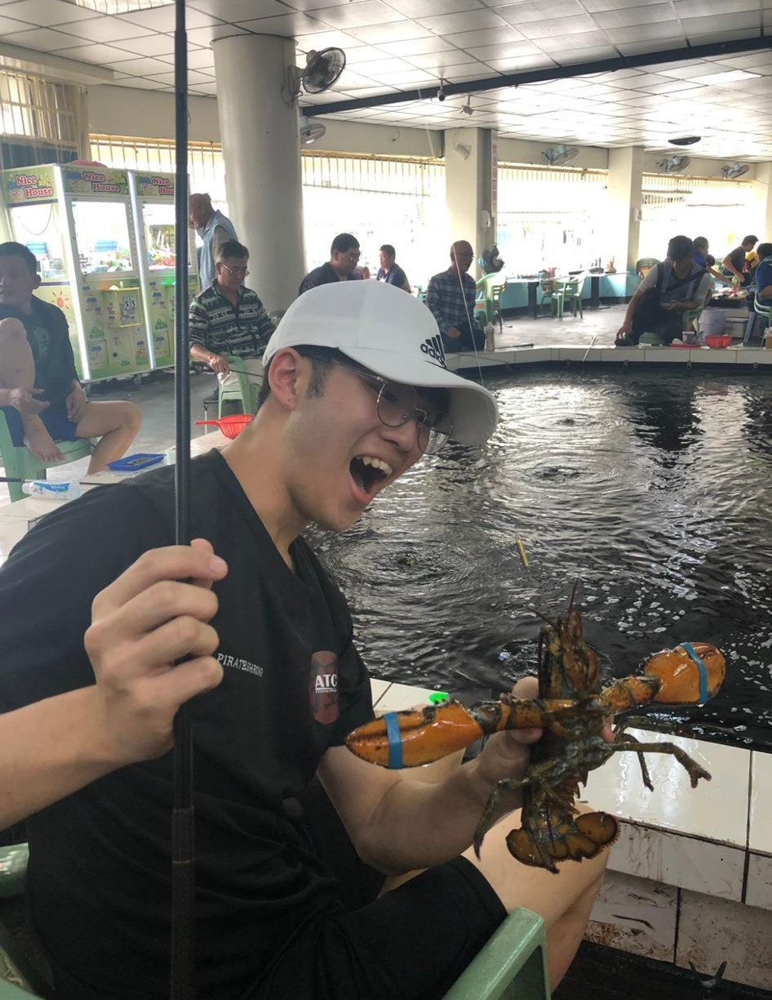

Im a prawning addict, at the age of 12 i was introduced to prawning by my family as a bonding activity. Since then i have been hooked on prawning until the point where me and a few kakis(prawning companions) decided to travel to taiwan, the birth place of prawning, just to get the experience of prawning there.